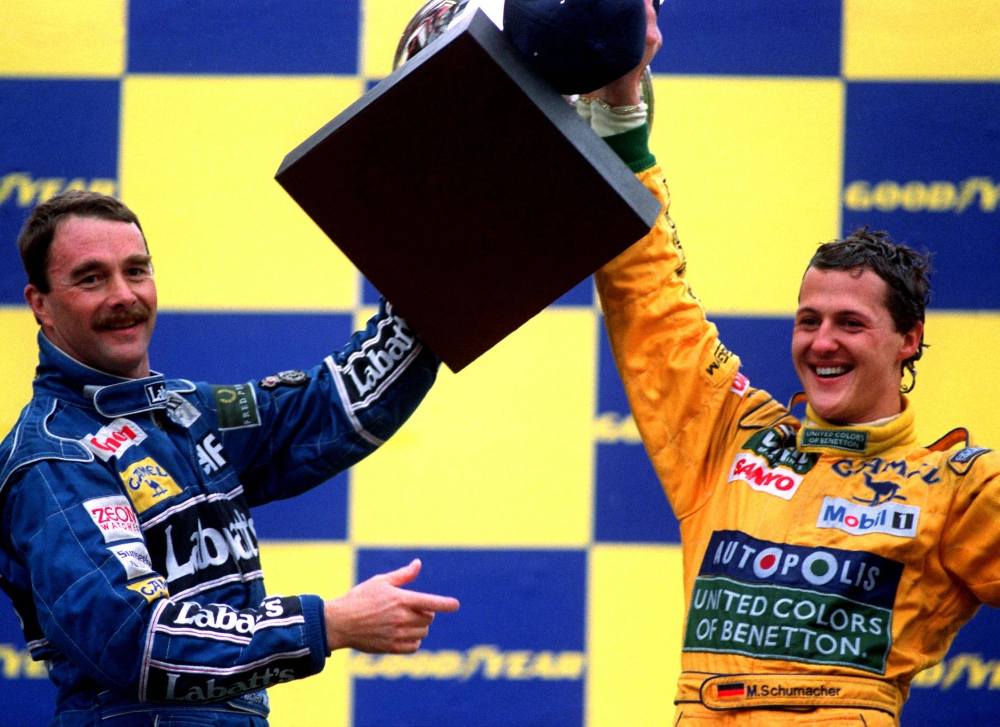

За статистикою та підходом до проведення Гран-прі пілотів Формули-1 можна умовно розділити на "спринтерів" і "марафонців". Перші під час підготовки до гоночного вікенду роблять ставку на те, щоб з кількох спроб зібрати ідеальне коло у кваліфікації, після чого намагаються в неділю втримати отриману перевагу.
Інші ж гонщики, як правило, проявляють себе вже в основному заїзді. Опинившись на стартовій решітці позаду швидших машин, вони докладають усіх зусиль, щоб вирватися вперед – до верхньої сходинки подіуму.
І сьогодні мова піде про великих мультичемпіонів, які належать до гонщиків другого типу – тих, для кого було звичною справою вигравати перегони, починаючи заїзд позаду своїх суперників. У багатьох випадках значущість таких перемог посилювалася тим, що їх було здобуто на слабшому боліді, хоча, зрозуміло, бували й винятки.
- Міхаель Шумахер
- Макс Ферстаппен
- Ален Прост
- Джекі Стюарт
- Емерсон Фіттіпальді
- Фернандо Алонсо
- Нікі Лауда
Міхаель Шумахер
91 перемога, 68 поул.
Починає наш топ Міхаель Шумахер. Крім семи чемпіонських титулів і величезної кількості рекордів, "Червоний Барон" увійшов в історію Формули-1 як гонщик, який виявляв неймовірну завзятість і прагнення опинитися на вершині подіуму навіть тоді, коли швидкість його болідів залишала бажати кращого.
Свою першу перемогу, на той момент ще просто "Сонячний хлопчик", здобув на Гран-прі Бельгії 1992 року, стартувавши з третьої позиції – на поулі тоді розташовувався Найджел Менселл.

А сезон 1994 року розпочався з того, що Шумахер виграв три перегони поспіль стартуючи другим – позаду Айртона Сенни, включно з трагічним "Чорним вікендом" в Імолі, коли бразилець загинув.
Серед безлічі суперників Міхаеля в боротьбі за титули найдовше бій тривав із двома пілотами – Деймоном Хіллом і Мікою Хаккіненом, кожен із яких по вісім разів програвав гонку німцеві після старту з поулу. І обидва виступали на болідах, сконструйованих інженерним генієм Едріана Ньюї.
Відтоді як ще у 80-х Формула-1 відмовилася від ненажерливих і ненадійних турбомоторів, у кваліфікаціях 90-х склалася тенденція: у сухих умовах поул зазвичай діставався власникам найшвидших машин. Хоча, звісно, траплялися й винятки з цього правила. Однак факт залишається фактом: у суботу у гонщика є кілька спроб, а проїхати безпомилково треба всього лише одне коло.
Оскільки що Бенеттон, що Феррарі поступалися в чистій швидкості спершу Вільямсу, а з 1998 року – Макларену, частіше Шумахеру доводилося стартувати позаду і вже в перегонах докладати всіх зусиль, щоб вирватися вперед. І вдавалося це йому настільки добре, що Червоний Барон майже завжди апріорі сприймався як грізний претендент на чемпіонський титул.
Слід також зазначити, що в епоху дозаправок було безліч можливостей обійти суперника на піт-стопі – за рахунок більш точного вибору моменту для зупинки і розрахунку кількості палива, що заливається в баки.
І в цьому неймовірно хороший був вірний союзник Міхаеля – геніальний стратег Росс Браун. А найзнаменитішим тріумфом симбіозу хитрості та ідеально точного пілотажу стало Гран-прі Угорщини 1998 року.
Що ж стосується найкращого прориву в кар'єрі – Шумахер здійснив його в дощовому Гран-прі Бельгії 1995 року, перемігши після старту з 16-ї позиції.
Макс Ферстаппен
65 перемога, 44 поули
Серед сучасних глядачів автоспорту досить складно знайти людину, яка б нейтрально ставилася до Макса Ферстаппена. Одні захоплюються його гоночним талантом і непоступливістю на трасі, в чому він нагадує гонщиків старої школи. Інші ж із засудженням сприймають агресивну поведінку нідерландця в перегонах і багато його висловлювань за межами траси.
Проте, його виступи говорять самі за себе. Першу перемогу Макс здобув у своєму дебютному заїзді за головну команду Ред Булл – на Гран-прі Іспанії 2016 року, що лише посилило ефект від його підвищення до основного складу посеред сезону.
Звичайно, сталося це багато в чому завдяки тому, що Льюїс Гамільтон, який стартував з поула, вже на першому колі зіткнувся зі своїм напарником Ніко Росбергом. Проте 18-річний Ферстаппен провів чудові перегони і витримав серйозний пресинг з боку досвідченого Кімі Райкконена в боротьбі за перше місце.
До моменту появи у Макса першого поулу – на Гран-прі Угорщини 2019 року – він уже виграв сім етапів. І хоча на початку своєї кар'єри нідерландець мав репутацію ненадійного та навіть аварійного пілота, неймовірну швидкість він демонстрував уже тоді, регулярно ускладнюючи життя швидшим болідам Мерседеса та Феррарі, та стабільно кілька разів за сезон забираючи у них перемогу.
До моменту переходу в "чемпіонську" стадію своєї кар'єри Ферстаппен перетворився на зрілого пілота, який точно знає, як вести болід, а кількість помилок звелася до мінімуму. У період 2022-2023 років найчастішою "жертвою" Макса став Шарль Леклер – нідерландець цілих 11 разів перемагав після поулів монегаска.
А найкращою (принаймні на цю мить) гонкою Ферстаппена, на думку більшості фанатів та експертів, вважається Гран-прі Сан-Паулу. Тоді він стартував лише 17-м, проте навіть на Ред Буллі, що втратив швидкість, зумів ефектно прорватися до перемоги на мокрій трасі. При цьому Ландо Норріс, який починав заїзд першим, фінішував лише шостим.
Ален Прост
51 перемога, 33 поули. Статистика: +18
Так склалося, що в очах більшості людей, лише поверхово знайомих з історією Формули-1, Ален Прост – це просто "суперник Айртона Сенни". Ціла низка чинників – медійна популярність бразильця завдяки образу "поганого хлопця", неймовірно агресивна поведінка, безліч гучних прізвиськ і, на завершення, трагічна загибель Сенни на трасі – призвели до того, що триразовий чемпіон став значно знаменитішим за чотириразового.
Водночас фанати автоспорту, які більш детально вивчають сторінки минулого "королівських перегонів", все ж можуть по-справжньому оцінити французького генія "золотої епохи" 80-х – легендарного "Професора" Алена Проста.
Сезон 1986 року став моментом, який особливо підніс Проста над іншими гонщиками. Попри серйозне відставання Макларена від Вільямса за чистою швидкістю, завдяки героїчній майстерності, хитрості та, в якійсь мірі, везінню, Ален усе ж таки вирвав титул із рук Найджела Менселла і Нельсона Піке. До слова, того року "Професор" лише один раз стартував з поула – в Монако, тоді як перемог у нього було чотири.
А подвиг, здійснений Простом у 1989 році, назавжди увійшов в історію автоспорту. Ален не просто став чемпіоном – він завоював титул всупереч бажанню своєї команди, яка цілком підтримувала його напарника – вищезгаданого Сенну. Подібних випадків у Формулі-1 просто не було. "Професор" домігся успіху в умовах, з якими жоден гонщик не справлявся ні до нього, ні після.
Однак кар'єра француза славиться не тільки титулами. Крім чотирьох чемпіонств, ще тричі Прост був неймовірно близький до бажаного результату: 1983 року у вирішальний момент згорів мотор, 1984-го не вистачило лише 0,5 залікового бала, а 1988 року Ален набрав більше за всіх очок, але через спірну систему підрахунку не всі результати були враховані.
Звичайно, історія не знає умовного способу. Але, так само як десятиліття потому Міхаель Шумахер, у своїй епосі Ален Прост сприймався за замовчуванням як грізний претендент – людина, яка знала, як перемагати, навіть якщо його машина була слабкішою.
І оскільки ця стаття насамперед про числа, варто згадати унікальний рекорд француза: цілих 13 разів Прост вигравав перегони після поулу Сенни. Жодна інша пара пілотів поки що не має таких показників. Зворотних випадків, до речі, було всього чотири – і всі вони сталися 1993 року.
Джекі Стюарт
27 перемог і 17 поулів. Статистика: +10
Сер Джекі Стюарт увійшов в історію Формули-1 як триразовий чемпіон світу, борець за безпеку автоспорту і просто легенда "героїчної" епохи "королівських перегонів".
З трьох титулів шотландського гонщика два заслуговують на особливу увагу. У 1969 році, на боліді Матра, який ледве з'явився, у кваліфікаціях було складно конкурувати з Лотусом і Бребемом. Однак на довгій дистанції Стюарт настільки добре реалізовував свій талант, що йому просто не було рівних – у перших восьми перегонах він здобув шість перемог і достроково оформив чемпіонський титул за три етапи до кінця, маючи на той момент більш ніж дворазову перевагу за очками над будь-яким іншим пілотом.
А в сезоні 1973 сталася ще цікавіша ситуація. І сам Джекі, і наступний учасник цього топу – Емерсон Фіттіпальді, які боролися за чемпіонство, на двох взяли лише чотири поули.
Водночас Ронні Петерсон, який опинився на третій сходинці особистого заліку, став справжнім "пілотом одного кола" і цілих дев'ять разів показував найкращий час у кваліфікації. Однак у неділю швед дуже часто сходив з дистанції, через що про боротьбу за головний трофей не йшлося.
Емерсон Фіттіпальді
14 перемог, 6 поулів. Статистика: +8
Емерсон Фіттіпальді – ще одна людина-легенда "героїчної" епохи Формули-1. І хоча "арифметична" різниця в +8 не виглядає особливо вражаючою на тлі попередніх учасників, "відносне" співвідношення 2,33 дійсно вражає. За цим параметром він перевершує всіх інших мультичемпіонів.
Бразильський гонщик дебютував у Формулі-1 посеред сезону 1970 року і вже у своєму четвертому старті здобув першу перемогу – на Гран-прі США. А в період з 1972 по 1975 роки Фіттіпальді незмінно був серед претендентів на титул: двічі ставав чемпіоном і ще двічі – срібним призером сезону.
Цілком можливо, Емерсон міг би домогтися значно більших успіхів, навіть завоювати ще кілька титулів і затьмарити славу своїх земляків із 80-х. Однак на початку 1976 року, піддавшись родинним (а можливо, і патріотичним) почуттям, він перейшов у бразильську команду "Фіттіпальді", власником якої був його рідний брат Вілсон.
Сказати, що це було помилкою – значить майже нічого не сказати. За наступні п'ять років Емерсон лише одного разу піднявся на подіум, посівши третє місце на Гран-прі США – Захід 1980 року. А в покинутому ним Макларені вже в першому ж сезоні новим чемпіоном став Джеймс Хант.
Фернандо Алонсо
32 перемоги, 22 поули. Статистика +10
Хоча Фернандо Алонсо досі виступає у Формулі-1, уже виросло ціле покоління глядачів, які не бачили його років слави – принаймні, у прямому ефірі. І лише більш зрілі вболівальники пам'ятають його протистояння з Феттелем, Шумахером і Райкконеном, а дехто – навіть дебют за кермом Мінарді, яка вічно відстає, в далекому 2001 році.
У 2003 році Фернандо перейшов до команди Рено, де і почалося його сходження – "під крилом" головного "злого генія" автоспорту Флавіо Бріаторе, для якого він став другим чемпіонським "вихованцем". Разом вони завоювали два титули – у 2005 та 2006 роках.
Хоча і в нульових у Фернандо вже була своя фан-база, справжня популярність прийшла до нього пізніше – через кілька років після двох тріумфів. Річ у тім, що обидва чемпіонства багато глядачів списували не стільки на швидкість Алонсо, скільки на технічні проблеми його суперників.
Проте італійці все ж вболівають за команду, а не за пілотів. Тому вже того ж 2010 року майже вся Монца вітала Фернандо "як рідного". Але не сама приналежність до Феррарі була головною причиною, через яку іспанець почав перетворюватися на легенду.
У більшості кваліфікацій "бики" були практично поза конкуренцією, але на дистанції перегонів Фернандо періодично випереджав менш досвідчених суперників. Саме тоді його статистика почала стрімко поліпшуватися: за п'ять років за кермом червоного боліда Алонсо здобув аж 11 перемог за лише чотирьох поулів.
І хоча стати чемпіоном іспанцеві так і не вдалося, у сезонах 2010 і 2012 він був неймовірно близький – не вистачило лише чотирьох і трьох очок відповідно. Але куди важливішим було інше: відчай, з яким Фернандо вів боротьбу за титул на свідомо слабшій техніці, мало кого залишив байдужим. У 2012 році Алонсо почали поважати й підтримувати навіть ті, хто люто ненавидів його у 2006-му.
Нікі Лауда
Хоча у Нікі Лауди статистична різниця лише +1 (25 перемог та 24 поули), у цей список він потрапив завдяки своєму третьому титулу. У 1984 році австрієць став чемпіоном світу не просто без жодної поул-позиції за весь сезон – він тоді навіть жодного разу не стартував із першого ряду.
Слід зазначити, що це був пік так званої "турбоери" у Формулі-1. Крім того, що надпотужні мотори часто виходили з ладу, важливу роль відігравало і те, що підхід до кваліфікації і до перегонів був потрібен кардинально різний.
На довгій дистанції, через обмеження за кількістю пального, які вже тоді існували, пілотам доводилося істотно знижувати потужність двигуна. Водночас щосуботи на одному колі турбомонстри запускалися на повну силу.
За титул у тому сезоні боролися два пілоти Макларена – Ален Прост і Нікі Лауда, обидва славилися вмінням стратегічно мислити. І якщо пізніше француз отримав прізвисько "Професор", то на тлі австрійця в 1984 році він все ж виглядав радше студентом.
Лауда швидко зрозумів, що в чистому пілотажі у нього мало шансів проти Проста, і тому пішов на хитрість: він жертвував кваліфікацією, повністю зосередившись на перегонах, налаштувавши машину. У підсумку по суботах він жодного разу не піднімався вище третього місця, а часом і зовсім опинявся в другому десятку. Зате в неділю Нікі регулярно здійснював ефектні прориви.
Сезон 1984 року можна довго розбирати по епізодах, але факт залишається фактом: здобувши п'ять перемог без єдиного поула, Нікі Лауда втретє став чемпіоном світу – з мінімальним відривом у 0,5 очка від свого напарника.